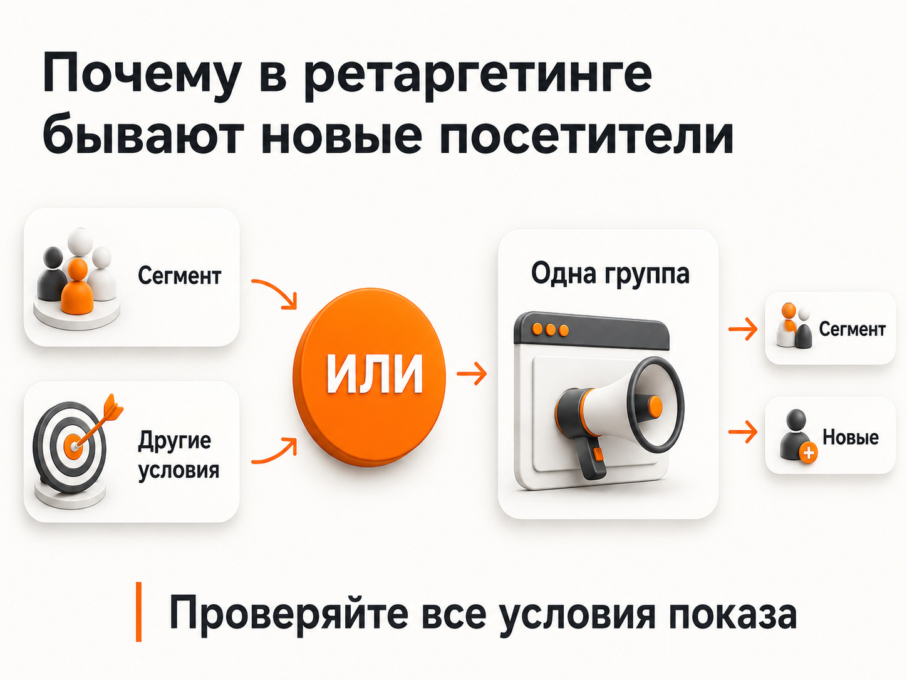

Блог о платном трафике
Ретаргетинг в Яндекс Директ: как настроить и когда он действительно нужен
Ретаргетинг в Яндекс Директ позволяет показывать рекламу людям, которые уже взаимодействовали с вашим сайтом, приложением или бизнесом. Обычно его описывают как способ "догнать" посетителя, который не оставил заявку или не сделал покупку.
Технически все так. Но вокруг ретаргетинга сложилось странное представление, будто это почти обязательный инструмент, который должен резко увеличить количество заявок.
На практике я считаю его сильно переоцененным.
В РСЯ Яндекс и без отдельной ретаргетинговой кампании анализирует интересы и поведение пользователей. Если человек интересуется определенной услугой или товаром, алгоритмы могут продолжать показывать ему рекламу этой тематики. То есть часть эффекта, который обычно ждут от ретаргетинга, уже присутствует в обычной работе Рекламной сети за счет поведенческого таргетинга.
Поэтому вопрос должен звучать не "как обязательно запустить ретаргетинг", а "есть ли в конкретном проекте смысл выделять эту аудиторию отдельно".
Что такое ретаргетинг в Яндекс Директе
Ретаргетинг - это настройка показов рекламы по заранее сформированному сегменту пользователей.
Например, можно отдельно работать с людьми, которые:
- посещали сайт;
- смотрели определенный раздел;
- открывали карточку товара;
- добавили товар в корзину, но не купили;
- выполнили определенную цель в Яндекс Метрике;
- уже являются клиентами;
- входят в загруженную CRM-аудиторию.
Для создания таких аудиторий используются цели и сегменты Яндекс Метрики, а также сегменты Яндекс Аудиторий. В текущем интерфейсе Директа условия создаются в разделе "Библиотека -> Сегменты аудитории".
Простой пример: человек посмотрел страницу услуги, но заявку не отправил. Его можно включить в отдельный сегмент и после этого показывать ему объявления в РСЯ.
Это и есть классическая механика ретаргетинга.
Почему ретаргетинг в РСЯ нужен не всегда

Главная проблема заключается в том, что обычная РСЯ давно не работает исключительно по принципу "страница сайта посвящена ремонту - покажем там рекламу ремонта".
Яндекс анализирует поисковые запросы, интересы и поведение пользователей и на основе этих сигналов подбирает объявления.
Поэтому человек, который недавно искал определенную услугу, посещал сайты компаний и сравнивал предложения, вполне может продолжать видеть вашу рекламу и без отдельной кампании по посетителям сайта.
Из-за этого запускать схему:
обычная РСЯ + еще одна РСЯ на всех посетителей сайта
имеет смысл далеко не всегда.
Вторая кампания может просто перераспределять между собой аудиторию с первой, не создавая какого-то принципиально нового источника клиентов.
Я бы рассматривал ретаргетинг как отдельный рекламный инструмент только тогда, когда понимаю, зачем именно мне нужна эта аудитория.
Например:
- изменить предложение;
- показать другой продукт;
- вернуть брошенную корзину;
- работать только с посетителями определенного раздела;
- отдельно повышать ценность конкретной аудитории;
- продолжить длинную воронку принятия решения.
Если единственная идея заключается в том, чтобы еще десять раз показать человеку тот же баннер, смысла в этом немного.
Подробнее - в статье «Что такое РСЯ в Яндекс Директе».
Почему в ретаргетинговой кампании может быть много новых посетителей

Это одна из самых интересных ошибок, которые я периодически вижу на аудитах.
Открываешь кампанию с названием "Ретаргетинг". По логике реклама должна работать по людям, которые уже посещали сайт.
Потом открываешь Яндекс Метрику и видишь долю новых посетителей 80-90% или даже больше.
Возникает очевидный вопрос: откуда там столько новых пользователей?
Одна из основных причин находится в самой механике настройки РСЯ.
В сетях сегменты аудитории работают вместе с другими условиями показа через оператор "ИЛИ". Другими словами, если в группе одновременно оставить сегмент посетителей сайта и другое условие подбора аудитории, объявление может быть показано человеку, который вообще не входит в ваш ретаргетинговый сегмент.
Поэтому если задача состоит именно в чистом ретаргетинге, нужно внимательно проверять остальные условия показа.
Это принципиальный момент.
Кампания может называться "Ретаргетинг", внутри нее может быть создан красивый сегмент из Метрики, но значительная часть трафика при этом будет приходить совсем по другим условиям.
При анализе доли новых пользователей нужно учитывать и ограничения самой веб-аналитики: разные устройства, браузеры и идентификаторы не всегда позволяют воспринимать этот показатель как абсолютное доказательство ошибки. Но если в чистой ретаргетинговой кампании почти весь трафик новый, настройки я бы проверил в первую очередь.
Подробнее - в статье «Аудит Яндекс Директ».
Какие аудитории ретаргетинга использовать
Самая простая аудитория - все посетители сайта.
И это одновременно один из самых слабых вариантов.
Человек мог случайно открыть страницу, провести на сайте несколько секунд и уйти. Другой пользователь мог изучить пять страниц, посмотреть цены и открыть форму заявки. Формально оба относятся к посетителям, но ценность у них совершенно разная.
Лучше строить сегменты исходя из поведения пользователя.
Посетители конкретной услуги
Если на сайте несколько направлений, человеку логичнее показывать рекламу того, чем он действительно интересовался.
Посетителя страницы рекламы для производства нет смысла догонять общим объявлением "Настроим интернет-рекламу".
Пользователи, которые проявили интерес
Можно работать с людьми, которые посмотрели несколько страниц, провели достаточно времени на сайте или совершили промежуточные действия.
Главное - не придумывать десятки микросегментов, если трафика мало. Чем сильнее вы дробите аудиторию, тем меньше данных остается у алгоритмов.
Посетители, которые не совершили конверсию
Для большинства проектов это один из наиболее понятных сценариев:
посетил сайт -> не отправил заявку -> попал в аудиторию повторной коммуникации.
При этом тех, кто уже оставил заявку, обычно нужно исключить, если дальнейшая реклама для них не имеет отдельного смысла.
Яндекс позволяет комбинировать положительные и отрицательные условия и задавать период попадания пользователя в аудиторию.
Брошенная корзина и просмотренные товары
Для интернет-магазинов ретаргетинг намного интереснее.
Яндекс поддерживает сегменты пользователей, которые смотрели товары, но не купили, добавляли товары в корзину, совершали покупки и выполняли другие ecommerce-действия.
Кроме классических сегментов существует офферный ретаргетинг. В нем система может повторно показывать человеку просмотренные предложения и рекомендованные товары или каталоги.
Для ecommerce это обычно намного логичнее, чем просто баннер "Вернитесь в наш магазин".
Текущие и бывшие клиенты
Через Яндекс Аудитории можно использовать собственные данные и работать с существующей клиентской базой.
Это уже не классическое "догоняем посетителя сайта".
Например, клиентам можно предлагать повторную покупку, сопутствующую услугу или следующий продукт.
Здесь появляется понятная бизнес-логика, а не просто повтор рекламы ради повторения.
Ретаргетинг в РСЯ
РСЯ - основное место, с которым обычно ассоциируется классический ретаргетинг.
Человек посещает сайт, попадает в нужный сегмент, а затем видит объявления на площадках Рекламной сети Яндекса.
Для чистой ретаргетинговой кампании я бы придерживался простой структуры:
1. Определить конкретный сегмент. 2. Исключить пользователей, которых больше не нужно рекламировать. 3. Проверить остальные условия показа в группе. 4. Подготовить отдельное объявление под эту аудиторию. 5. По возможности изменить предложение, а не повторять исходное. 6. После запуска отдельно анализировать расходы и конверсии.
Особенно внимательно нужно проверять пункт с условиями показа. В сетях сегменты работают с другими таргетингами по принципу "ИЛИ". Поэтому наличие сегмента само по себе еще не означает, что реклама показывается исключительно этому сегменту.
Подробнее - в статье «Как отключить автотаргетинг в Яндекс Директе».
Ретаргетинг на Поиске Яндекса
Сегменты аудитории можно использовать и на Поиске.
Но механика здесь другая.
На Поиске условие аудитории работает вместе с ключевой фразой или автотаргетингом через оператор "И". Пользователь должен одновременно входить в выбранный сегмент и соответствовать поисковому условию.
Например:
человек уже посещал ваш сайт + сейчас снова ищет услугу в Яндексе.
Такую аудиторию действительно можно считать более теплой.
На практике поисковый ретаргетинг интересен, когда накоплена достаточно большая аудитория и есть причина работать с ней иначе, чем с обычным поисковым трафиком.
Для небольшой компании с несколькими сотнями посетителей сайта чрезмерно усложнять структуру кампаний обычно бессмысленно.
Сегменты также можно использовать для корректировок ставок. Например, если определенная аудитория по статистике действительно конвертируется лучше, ее можно учитывать при управлении рекламой.
Как настроить ретаргетинг в Яндекс Директе
Конкретные названия отдельных элементов интерфейса со временем меняются, но принцип настройки остается достаточно простым.
Шаг 1. Установите Яндекс Метрику
Директ должен получать данные о поведении пользователей на сайте.
Проверьте, что счетчик работает и реальные целевые действия корректно фиксируются.
Подробнее - в статье «Как проверить цель в Яндекс Метрике».
Шаг 2. Определите, кого хотите вернуть
Не начинайте с кнопок в интерфейсе.
Сначала сформулируйте сценарий обычным языком.
Например:
"Люди, которые смотрели услугу за последние 30 дней, но не оставили заявку".
Это уже практически готовое техническое задание на сегмент.
Шаг 3. Создайте аудиторию
В Директе можно использовать готовые сегменты или создать собственное условие на основе целей и сегментов Метрики и данных Яндекс Аудиторий.
Сейчас путь для создания собственного условия выглядит как "Библиотека -> Сегменты аудитории -> Новое условие".
Период для целей Метрики можно задавать от 1 до 540 дней.
Не выбирайте максимальный срок автоматически. Если человек искал срочную услугу восемь месяцев назад, сегодня его интерес может уже не иметь никакой ценности.
Шаг 4. Добавьте исключения
Если задача - вернуть пользователей без заявки, исключите тех, кто уже ее отправил.
Если рекламируется первая покупка - исключите покупателей.
Если делаете отдельное предложение существующим клиентам, наоборот, создайте соответствующую аудиторию.
Именно на этом этапе простое "все посетители сайта" превращается в нормальную маркетинговую механику.
Шаг 5. Добавьте сегмент в группу объявлений
После создания аудитории она используется как условие показа.
В РСЯ обязательно проверьте, какие еще условия активны в этой группе. Если оставить дополнительные способы подбора аудитории, кампания может перестать быть чистым ретаргетингом.
На Поиске сегмент, наоборот, работает совместно с поисковым условием.
Шаг 6. Сделайте отдельное предложение
Вот этот пункт чаще всего важнее всех предыдущих.
Не показывайте человеку одно и то же бесконечно
Представим идеальную картину.
Человек увидел рекламу.
Перешел на сайт.
Посмотрел предложение.
Ничего не сделал.
После этого вы снова показываете ему то же объявление и отправляете на ту же страницу.
Он снова ничего не делает.
И потом получает это же предложение третий, четвертый, пятый и десятый раз.
Технически ретаргетинг работает идеально.
Маркетингового смысла в нем почти нет.
Если человек несколько раз видел одно предложение и оно его не убедило, вероятность того, что одиннадцатый идентичный баннер резко изменит ситуацию, невелика.
Нормальная работа с ретаргетингом начинается тогда, когда меняется следующий шаг воронки.
Например:
первое касание -> основная услуга;
второе касание -> конкретный кейс;
третье касание -> другой аргумент или предложение;
следующее касание -> отдельная посадочная страница.
Именно поэтому серьезный ретаргетинг требует не столько технической настройки Директа, сколько продуманной воронки, новых креативов и иногда дополнительных посадочных страниц.
Если всего этого нет, часто проще оставить обычную РСЯ и не создавать еще несколько кампаний ради самой структуры рекламного кабинета.
Когда ретаргетинг действительно имеет смысл
Я бы отдельно тестировал его в следующих ситуациях:
| Ситуация | Есть ли смысл |
|---|---|
| Большой трафик на сайте | Да, аудиторию уже можно нормально сегментировать |
| Интернет-магазин | Да, особенно просмотр товаров и брошенная корзина |
| Длинный цикл принятия решения | Часто да |
| Есть разные этапы воронки | Да |
| Можно показать новое предложение | Да |
| Есть CRM-база клиентов | Может быть полезно |
| Несколько сотен посетителей в месяц | Часто эффект будет ограниченным |
| Планируется показывать тот же баннер на ту же страницу | Обычно смысла немного |
| Обычная РСЯ уже стабильно дает результат | Отдельный ретаргетинг нужно сначала обосновать |
Главное правило - не считать ретаргетинг обязательной частью любого рекламного аккаунта.
Как оценивать эффективность ретаргетинга
Не сравнивайте кампанию только по CTR.
Проверяйте:
- расход;
- количество конверсий;
- стоимость целевого действия;
- качество заявок;
- продажи;
- долю новых и вернувшихся посетителей;
- сегменты и фактические условия показа.
Если это отдельная ретаргетинговая кампания, нужно убедиться, что она действительно приводит ту аудиторию, ради которой создавалась.
Иногда после проверки выясняется, что большая часть результата пришла через холодные условия показа, а созданный сегмент практически не участвовал в работе.
Подробнее - в статье «Аудит Яндекс Директ».
Нужен ли ретаргетинг именно вам
Ретаргетинг в Яндекс Директе - полезный инструмент, но не универсальный способ сделать рекламу эффективнее.
В РСЯ уже работает сложный алгоритмический подбор аудитории по поведению и интересам. Поэтому отдельная кампания имеет смысл, когда вы можете четко объяснить, какую аудиторию хотите выделить и что собираетесь делать с ней иначе.
Если вы просто хотите еще несколько раз показать посетителю тот же оффер, ожидать от такой настройки резкого роста заявок я бы не стал.
Ретаргетинг становится действительно интересным, когда является частью воронки: разные сегменты, исключения, разные сообщения и новый аргумент для следующего контакта.
Частые вопросы
Можно ли настроить ретаргетинг только в РСЯ?
Нет. Сегменты аудитории работают и на Поиске, и в сетях. На Поиске пользователь должен одновременно соответствовать сегменту и поисковому условию. В РСЯ механика отличается.
Нужно ли создавать отдельную кампанию для ретаргетинга?
Не обязательно. Отдельная структура оправдана, когда вы хотите независимо управлять бюджетом, объявлениями, предложением и аналитикой этой аудитории. Делать отдельную кампанию только потому, что "так принято", смысла нет.
Какую аудиторию выбрать для ретаргетинга?
Не начинайте со всех посетителей сайта. Лучше определить конкретный сценарий: посетители нужной услуги, пользователи без конверсии, брошенные корзины, текущие клиенты или другая понятная группа.
Почему в ретаргетинге появляются новые пользователи?
Одна из причин - дополнительные условия показа. В РСЯ сегменты аудитории работают с другими условиями через оператор "ИЛИ", поэтому группа может получать показы за пределами выбранного сегмента.
Нужно ли исключать тех, кто уже оставил заявку?
Если дальнейшая реклама этим людям не нужна - да. Иначе бюджет будет продолжать расходоваться на уже полученные обращения.